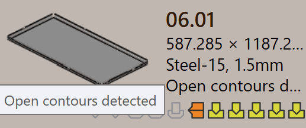

零件狀態
當零件匯入 TruSmartCAM 時，相關的鈑金技術會自動處理到零件。作為此過程的一部分，TruSmartCAM 會執行驗證檢查。
零件狀態直接顯示在零件磁貼上，位於零件名稱下方，指示零件的當前驗證條件。
零件狀態類型描述了零件因零件級驗證檢查而可能處於的不同狀況。這些狀態指出與零件的設計、材料或幾何形狀相關的問題，必須在工具處理之前解決。
零件錯誤
CAD（電腦輔助設計）錯誤發生在零件設計或幾何形狀出現問題時，例如開放輪廓、缺少幾何形狀或未指定材料。這些錯誤源自 CAD 模型，並阻止零件進一步處理。
-
折彎不可行 ：TruSmartCAM 會自動嘗試為零件尋找有效的折彎方法。如果找不到任何適合的折彎解決方案，零件將標記為折彎不可行。
-
Cut infeasible ：如果忽略折彎警告，TruSmartCAM 會嘗試尋找切割方法。如果找不到有效的切割解決方案，零件將標記為切割不可行。


材料錯誤
-
材料不存在 ：零件的厚度從 CAD 模型中讀取，並與 TruSmartCAM 原材料資料庫中的材料進行比對。如果找不到符合的材料，零件將標記為 材料不存在 錯誤。
-
未分配材料 ：如果 CAD 模型沒有材料映射欄位或欄位為空，TruSmartCAM 無法指派材料。在這種情況下，零件將標記為 未分配材料 錯誤。


幾何形狀錯誤
-
識別到開放輪廓 ：CAD 檔案有一個或多個開放（不完整）的形狀，這會阻止正確的工具處理。
-
識別到多個外輪廓 ：CAD 檔案有多個外部封閉迴路，這會在處理過程中造成混淆。
-
Nascent error ：當零件從試算表（CSV 或 XLSX）載入，但實際的 CAD 檔案缺失時，它會被標記為雛形零件。
-
幾何形狀缺失 ：CAD 模型沒有有效的幾何形狀或幾何形狀無法讀取，使其無法用於工具處理。
